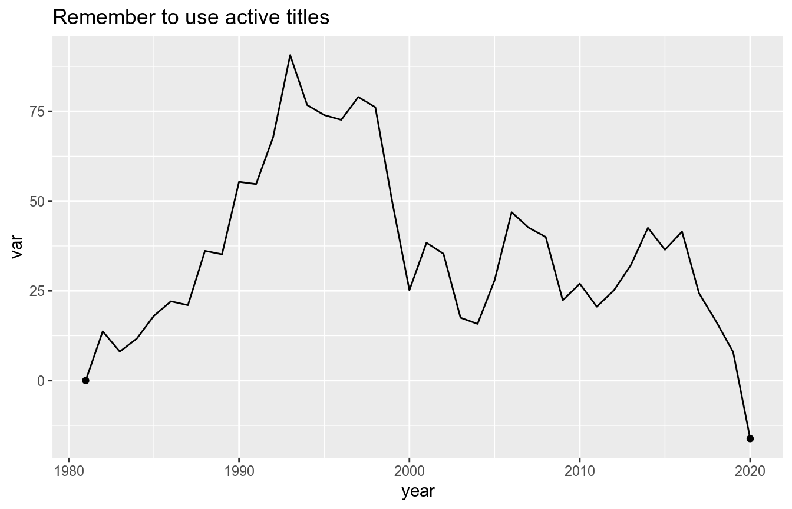
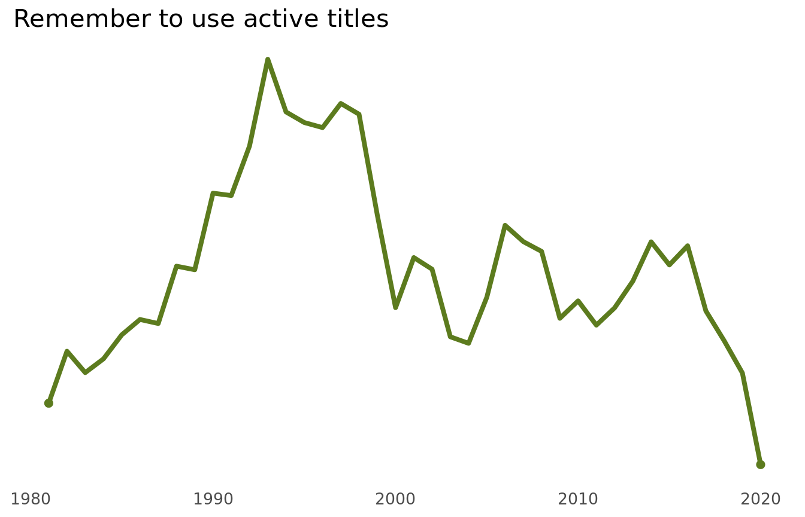
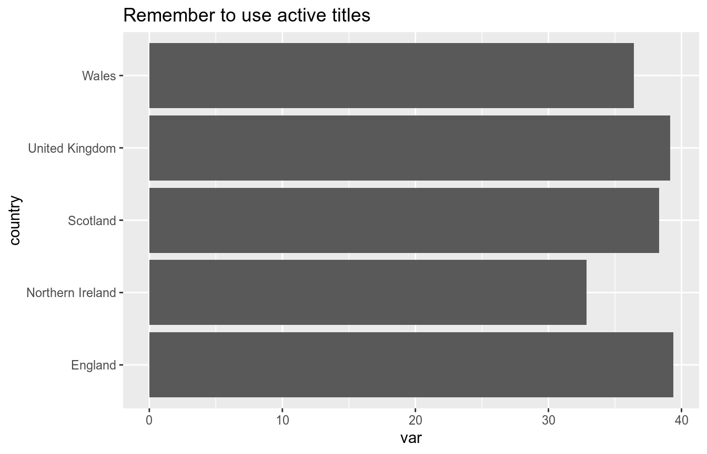
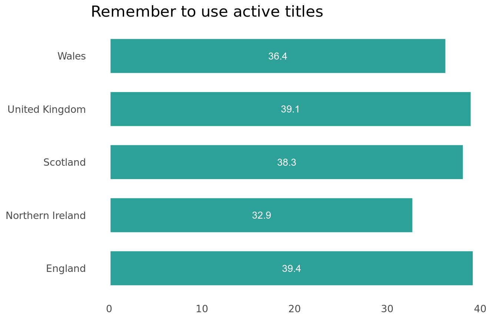
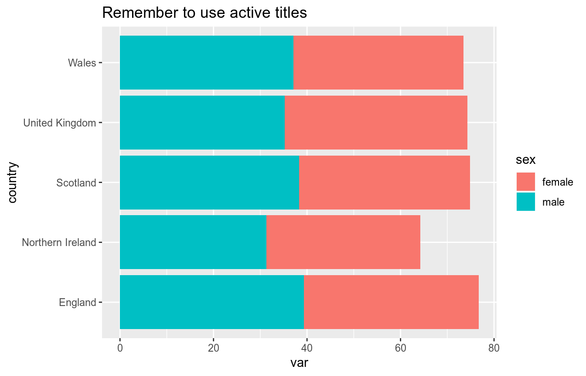
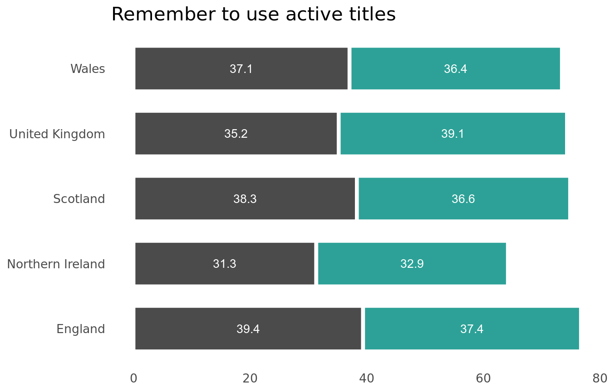

nrsplot.RmdThis vignette is not finished - watch out for updates.
library(ggplot2)
library(nrsplot)
set.seed(42)
df <- data.frame(year = 1981:2020,
var = diffinv(rnorm(39)) * 10,
endpoints = NA)
df[["endpoints"]][df[["year"]] %in% c(1981, 2020)] <-
df[["var"]][df[["year"]] %in% c(1981, 2020)]
p <- ggplot(df, aes(year, var)) +
labs(title = "Remember to use active titles")
p +
geom_line() +
geom_point(aes(y = endpoints))
#> Warning: Removed 38 rows containing missing values (geom_point).
p +
geom_line_nrs(colour = nrs_palette[["household"]][["main"]]) +
geom_point_nrs(aes(y = endpoints),
fill = nrs_palette[["household"]][["main"]],
colour = nrs_palette[["household"]][["main"]]) +
nrs_theme() +
theme(axis.text.y = element_blank())
#> Warning: Removed 38 rows containing missing values (geom_point).
library(ggplot2)
library(nrsplot)
set.seed(42)
df <- data.frame(country = c("United Kingdom", "England", "Northern Ireland",
"Scotland", "Wales"),
var = runif(5, min = 30, max = 40))
p <- ggplot(df, aes(country, var, label = format(round(var, 1), nsmall = 1))) +
coord_flip() +
labs(title = "Remember to use active titles")
p + geom_col()
p +
geom_col_nrs(fill = nrs_palette[["population"]][["main"]]) +
geom_text_nrs(position = position_stack(vjust = 0.5), colour = "white") +
nrs_theme()
library(ggplot2)
library(nrsplot)
set.seed(42)
df <- data.frame(country = c("United Kingdom", "England", "Northern Ireland",
"Scotland", "Wales"),
sex = c("female", "male"),
var = runif(10, min = 30, max = 40))
p <- ggplot(df, aes(country, var, fill = sex,
label = format(round(var, 1), nsmall = 1))) +
coord_flip() +
labs(title = "Remember to use active titles")
p + geom_col()
p +
geom_col_nrs() +
geom_text_nrs(position = position_stack(vjust = 0.5), colour = "white") +
nrs_theme() +
scale_fill_manual(values = c(nrs_palette[["population"]][["main"]],
nrs_palette[["neutral"]][["tundora"]]))